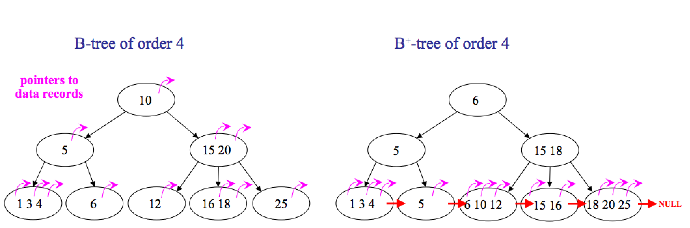
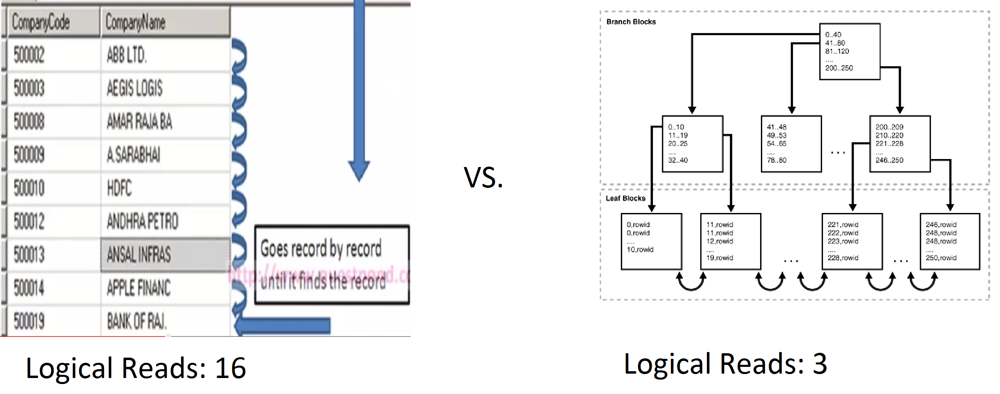
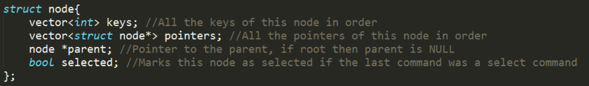
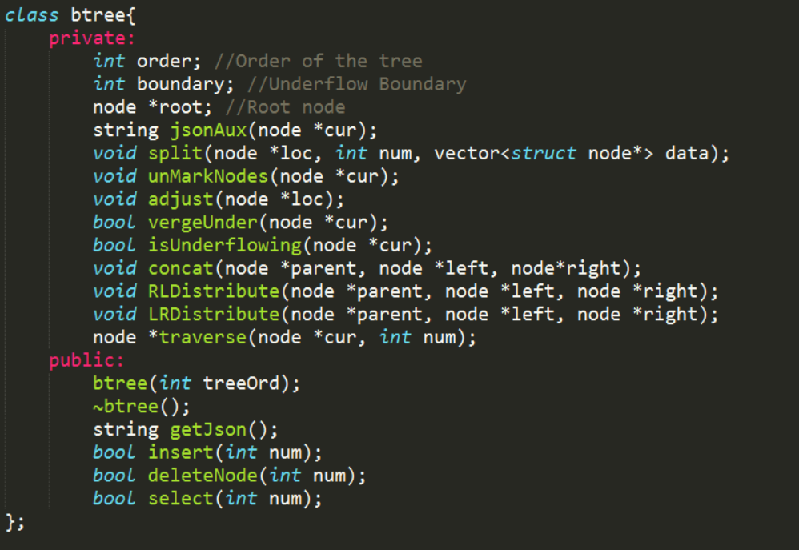

Table of Contents
- What is a B Tree?
- What is a B+ Tree?
- Why are they important?
- Data Structures
- The Algorithms
- Insert
- Search
- Delete
- Implementation and Testing
- Bugs
What is a B Tree?
A B tree (not to be confused with a binary search tree) of order m has the following properties:
- The root is either a leaf, or an interior node with 2...m children
- All interior nodes have between d and 2d keys
- All nodes have up to m-1 keys
- All internal nodes as well as the root node will have one more child than keys
- All leaves are at the same depth
What is a B+ Tree?
A B+ tree of order m is a little different. In B+ trees the leaf nodes are linked. Also data in B+ trees are only stored in leaf nodes. Since all the data is stored in the leaf nodes the tree structure requires less memory than a B tree.
Why are they important?
- Filesystems
FAT (File Allocation Table), Ext4, NTFS, and HFS+ all use B-Trees. Each entry in the tree represents a disk block, what file it's apart of and where the next disk block is for that file.
- Databases 
Data Structures

The Algorithms
Insert
- Traverse the tree to find out where new key should be inserted
- If the node contains fewer than the maximum legal number of elements, then there is room for the new element. Insert the new element in the node, keeping the node's elements ordered.
- Otherwise the node is full, evenly split it into two nodes so:
- A single median is chosen from among the leaf's elements and the new element.
- Values less than the median are put in the new left node and values greater than the median are put in the new right node, with the median acting as a separation value.
- The separation value is inserted in the node's parent, which may cause it to be split, and so on. If the node has no parent (i.e., the node was the root), create a new root above this node (increasing the height of the tree).
Time Complexity
O(log m (n)) - Time to select which branch to work on, as well as the time to split nodes
O(m) - Time to fix up a node
O(m*log m (n)) - Time complexity
log m (n) = log(m) * log(n), O(m*log(m)*log(n))
Since the order m of a B Tree does not change as n does this can be simplified to O(log(n))
Best Case = Worst Case = O (log(n))
Search
- Traverse the tree to find out which node the key is in
- Traverse the node to find the key
Time Complexity
O(log m (n)) - Find node
O(m) - Find key in node
O(m*log m (n)) - Time complexity
log m (n) = log(m) * log(n), O(m*log(m)*log(n))
Since the order m of a B Tree does not change as n does this can be simplified to O(log(n))
Best Case = Worst Case = O (log(n))
Delete
- Traverse the tree to find the key to delete
- If it is in a leaf node:
- Delete key
- If the node is underflowing, adjust the tree by redistriuting keys or concatenating nodes
- If it is in an internal node:
- Delete key
- Find the leftmost key in the right subtree and put it in place of the deleted key
- If the node is underflowing, adjust the tree by redistriuting keys or concatenating nodes
Time Complexity
Same as Insert
Best Case = Worst Case = O (log(n))
Implementation and Testing
 Github Link to Repository
Github Link to Repository